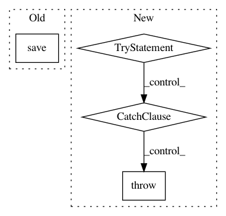

c0833c03181a2a9a2ce50bf43281ba698f61887c,workers/data_refinery_workers/processors/smasher.py,,_smash_all,#Any#,303
Before Change
job_context["dataset"].success = False
job_context["job"].failure_reason = "Failure reason: " + str(e)
job_context["dataset"].failure_reason = "Failure reason: " + str(e)
job_context["dataset"].save()
// Delay failing this pipeline until the failure notify has been sent
job_context["job"].success = False
job_context["failure_reason"] = str(e)
return job_context
After Change
// Finally, compress all files into a zip
final_zip_base = "/home/user/data_store/smashed/" + str(job_context["dataset"].pk)
try:
shutil.make_archive(final_zip_base, "zip", job_context["output_dir"])
except:
raise utils.ProcessorJobError("Smash Error while generating zip file", success=False)
job_context["output_file"] = final_zip_base + ".zip"
job_context["dataset"].success = True
job_context["dataset"].save()
In pattern: SUPERPATTERN
Frequency: 3
Non-data size: 4
Instances
Project Name: AlexsLemonade/refinebio
Commit Name: c0833c03181a2a9a2ce50bf43281ba698f61887c
Time: 2019-12-24
Author: arielsvn@gmail.com
File Name: workers/data_refinery_workers/processors/smasher.py
Class Name:
Method Name: _smash_all
Project Name: dpressel/mead-baseline
Commit Name: 3a113ee3efe296452f9c169a58713fdfe1873439
Time: 2018-11-08
Author: mtbarta@gmail.com
File Name: python/mead/tf/exporters.py
Class Name: TensorFlowExporter
Method Name: run
Project Name: AlexsLemonade/refinebio
Commit Name: 14ad858086a43963bfe1c2c2e1fbd1500d644d19
Time: 2017-05-04
Author: kurt.wheeler91@gmail.com
File Name: foreman/data_refinery_foreman/surveyor/external_source.py
Class Name: ExternalSourceSurveyor
Method Name: handle_batch